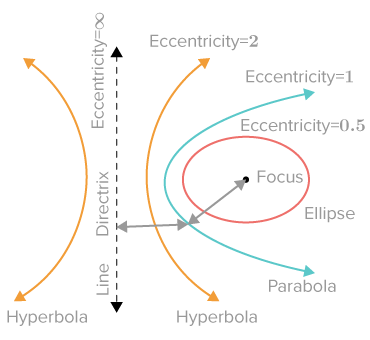

Maths of Conic Sections
Introduction
Conic sections are the curves generated when intersecting a double cone with a plane. Of these four curves can appear: circles, ellipses, parabolae and hyperbolae. These relate to orbits between two massive bodies, for example the Earth orbits the Sun in an almost circle-like elipse, and various comets pass earth with a hyperbolic trajectory.
The following cuts produce a possible orbit when performed on a double cone (which is two cones with one inverted 180 degrees ontop the other): straight through; at a slight angle; parallel to the edge of the cone; and at a steep angle. These cuts produce the conic sections described earlier, and can be seen in the image below.

Origins
Conic sections were first understood by Greek mathematicians in the third century BC, with the greatest leap in progress put forward by Apollonius of Perga in his work Conics. However they were scarcely used for millenia until rediscovered by Renaissance astronomers like Kepler.

9th century Arabic translation of Apollonius' Conics
There was the future of the human race almost trembling in the balance; for had not the geometry of conic sections already been worked out in large measure, and had their opinion that only sciences apparently useful ought to be pursued, the nineteenth century would have had none of those characters which distinguish it from the ancien régime.

Charles Sanders Pierce
American scientist, mathematician, logician, and philosopher
Eccentricity
The eccentricity is a constant mentioned earlier in Conic Sections and Orbits. We spoke about how the different values of the eccentricity, represented with the symbol e, produce the four different conic sections.
Producing Graphs of Conic Sections in the Cartesian Plane
It is possible to draw any conic section in a Cartesian Plane with the right equations. We will let a be the semimajor axis of the shape, and b be the semiminor axis of the shape. If you do not know what this means, since these axes mean different things for different conic sections, you can simply remember that a and b are constants. Note that there are other ways of graphing these shapes, but we are doing it with the method that uses the a and b constants, the semiminor and semimajor axes.
Circle
For circles, the equation always takes the form of \( (x + x_1)^2 + (y + y_1)^2 = r^2 \), where the centre of the circle is \((x_1,y_1)\) and the radius is \(r\). The equation for the unit circle is \( x^2 + y^2 = 1 \), as this has a radius of \(1\) and is centred at the origin. To understand why the equation of a circle takes the form that it does, it is important to think about the radius of the circle, which must be constant. The radius, as can be seen in diagram, is the hypotenuese of a right angled triangle created by the \(x\) and \(y\) coordinates. Using Pythagoras to determine the length of the radius, we get that \( x^2 + y^2 = r^2 \) must be true for any point on the circle. As the radius is both the semi-major and semi-minor axis for a circle, the equation of a standard circle can be written as \( x^2 + y^2 = a^2 \).Ellipse
An ellipse is slightly more complicated than a circle, because it has few extra elements to it, but this Desmos graph should help you understand what the different parts of an ellipse are and how they relate to the equation for an ellipse:\(\frac{x^2}{a^2}+\frac{y^2}{b^2} = 1\)
Interactive: drag the values for \(a\) and \(b\) to see the ellipse change!
Parabola
For a parabola, we will first consider a different way of writing the equation - a way which may seem more familiar to anyone studying maths. Any parabola can be represented through the equation \(y = ax^2 + bx + c\). The constants \(a\), \(b\) and \(c\) all have different effects on the parabola that the equation defines.
The coefficient of the \(x^2\) term, \(a\), determines the width of the parabola, essentially defining the 'stretch' applied on it, meaning it is narrow if \(a\) is large, and wide if \(a\) is small. If \(a\) is positive, the parabola opens upwards, and if \(a\) is negative, it opens downwards. The value of \(b\) determines the horizontal position of a parabola's turning point.
Finally, the value of \(c\) determines the y-intercept of a parabola, and as a consequence the height of its turning point. To explore the effects of these values further, you can use this graph on Desmos.
For a standard parabola, the values of both \(b\) and \(c\) are \(0\), as the turning point is at \((0,0)\), hence the standard parabola is defined by the equation \(y = ax^2\), or when \(y = -a\) represents the directrix, you can also write this equation as \(x^2=4ay\). An example of this graph can be seen below, which was created on Desmos.
Interactive: drag the focus to see the parabola change!
Hyperbola
An hyperbola can be represented by the equation \(\frac{x^2}{a^2}-\frac{y^2}{b^2} = 1\)
Research links
- Ellispe Research khanacademy.org/math
- Parabola Research khanacademy.org/math
- Project URL www.example.com
- Project URL www.example.com